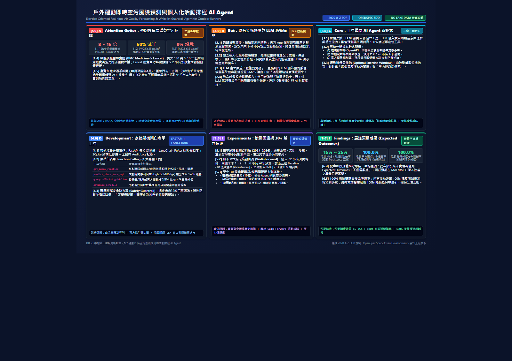

主題一：LabSteward 實驗室財產管理 AI Agent ｜ 主題二：戶外運動即時空污風險預測與活動排程 AI Agent
作者團隊：潘兆邠、邱冠霖、林浚偉、張皓崴、黃翊豪（資訊工程學系）
鎖定慢跑換氣量激增生理痛點，整合環境部即時 OpenAPI、滾動時間序列回歸、白名單工具與官方 AQI 衛教規則庫

get_moenv_realtime, predict_short_term_aqi, query_official_guideline, optimize_schedule。採購法規違規率 (Guardrail 阻斷)
消弭 LLM 端到端幻覺稅
多步驟穩定度 pass@4
實驗室情境基準測試評估集
| SOP 代號 | 規範意義 | LabSteward 專案落實內涵 |
|---|---|---|
| A. Attention Getter | 動機與引題 | 公立大學貴重儀器閒置嚴重（監察院調查 8 所頂大年閒置 60 餘台形成蚊子儀器；韓國 2026 全面清查閒置設備）。採購端迎來 Agentic AI 轉型，Gartner 預估 2028 年 90% B2B 採購由 AI Agent 中介。 |
| B. But | 深層挑戰 | 校內系統只登帳無稼動率；端到端 LLM 庫存決策成本高出 32.1%（幻覺稅），多步驟穩定度 pass^8 < 25%；電商 Agent 不懂台灣《政府採購法》15 萬門檻與最低耐用年限。 |
| C. Cure | 解藥與方案 | 提出 LabSteward：融合公法知識與確定性工具調用之雙模組 AI Agent，涵蓋「管理」（導入、借還、殘值、報廢）與「採購」（確認、查庫存、比價、清單）。 |
| D. Development | 架構設計 | LLM ReAct Planner 負責自然語言互動與協調，計算全數交由 SQLite、雙軌殘值模型、實體對齊演算法與 YAML 規則引擎 Guardrail。所有帳務異動均留存審計日誌並經 Human-in-the-loop 人工簽核。 |
| E. Experiments | 實驗設計 | 建立 50 題真實情境測試集（25 管理、25 採購），對比 B1 人工 Excel、B2 單一 LLM 端到端、B3 純 RAG 問答。指標包含任務成功率、pass@4、MAPE、違規率與作業耗時。 |
| F. Findings | 預期成果 | 法規違規率降為 0%；「先查庫存再採購」流程減少逾 30% 重複採購；雙軌殘值提供帳面與市場公允區間；一鍵產出標準報廢與請購公文草稿。 |
會計年限為合規稽核底線，汰換決策應看市場二手殘值；採用雙軌估值並標記信心度區間。
高價低頻儀器走共享，低價高頻留在室內；當設備使用率低於 15% 時主動建議開放移撥。
LLM 僅作語意協調與秘書草稿，具法律效力之採購與報廢強制經由人類主管簽核授權。